3D Avatars: reconstruction and generation of 3d human bodies and heads
Andrei Spiridonov
Why it is important?
Humanization of an AI
Metaverse, gaming, virtual reality and telepresence
Animation, motion capture, and virtual try-on


Pose Estimation
Facial landmarks
Pose estimation
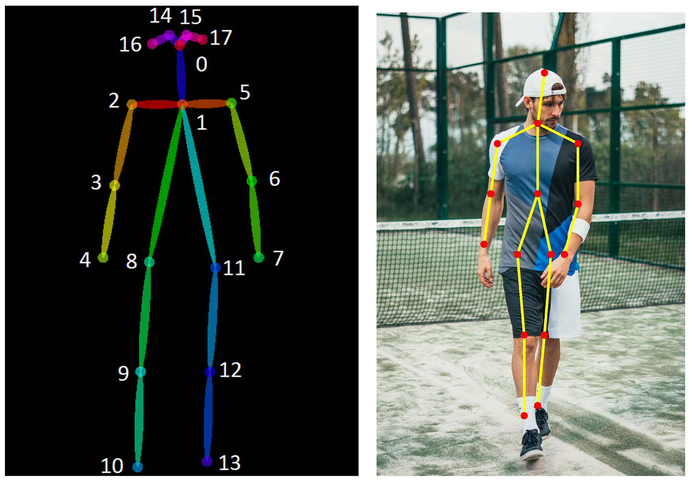
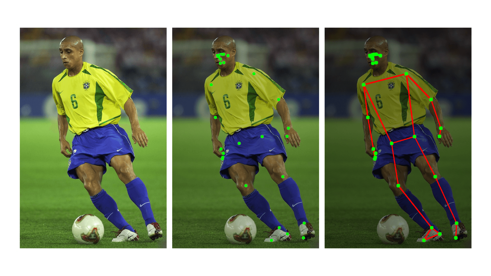
Parametric models
Blendshape models


Vertex Blending
\[ \mathbf{v} = \sum_{i=1}^n w_i \mathbf{v}_i \] \[ \text{where } \mathbf{v} \text{ is the blended vertex, } \mathbf{v}_i \text{ are the vertices to blend, and } w_i \text{ are the weights.} \] \[ \sum_{i=1}^n w_i = 1 \] basis $\mathbf{v}_i$ is created from multiple scans using PCAFLAME
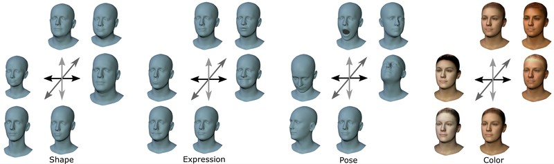- FLAME is a 3D morphable model of human faces
- Has 4 joints: jaw, left and right eye, and mouth
- Uses Linear Blend Skinning to accomodate joints
- Vast data scan to fit the model
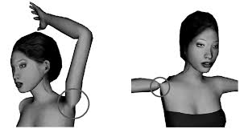
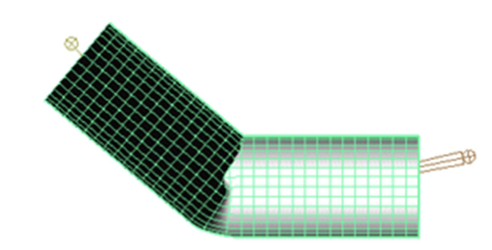
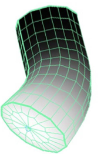
SMPL
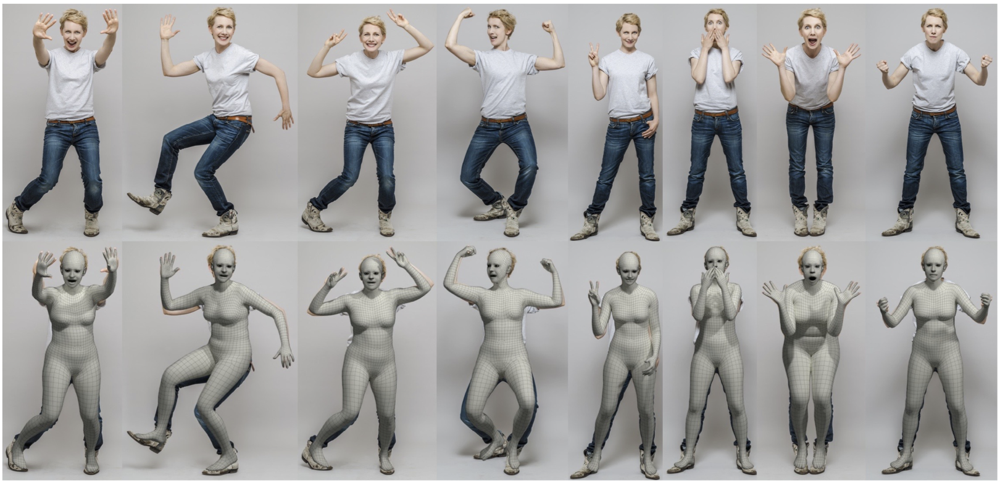 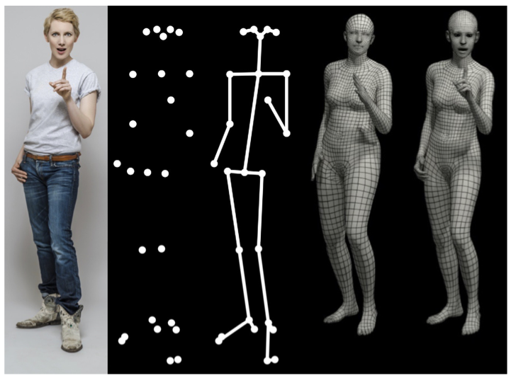With Texture (MORF, Bashirov et. al.)
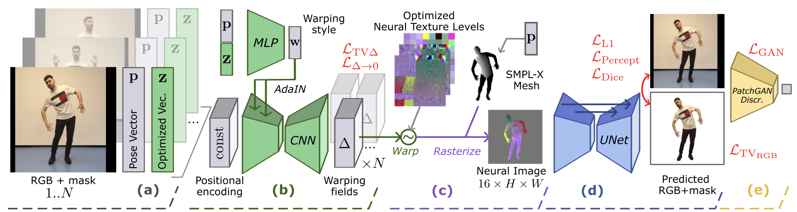 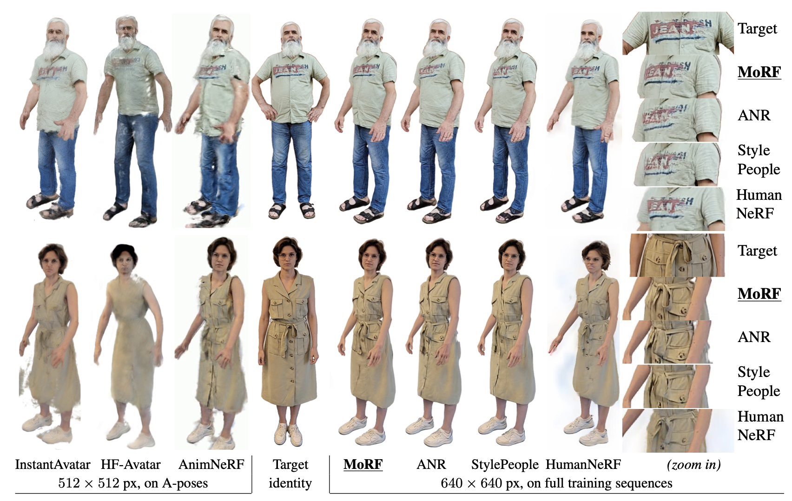With Texture (ROME, Khakhulin et. al.)
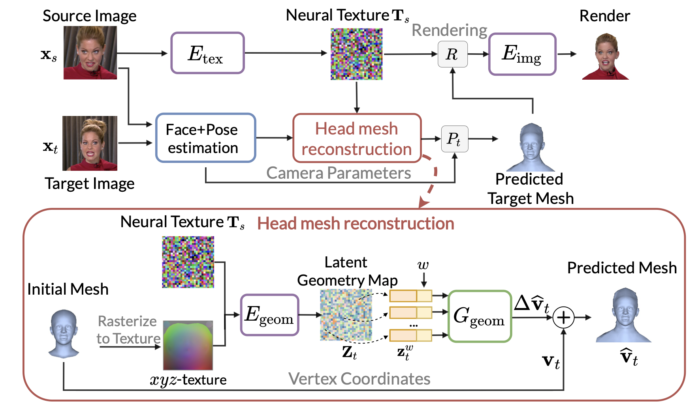 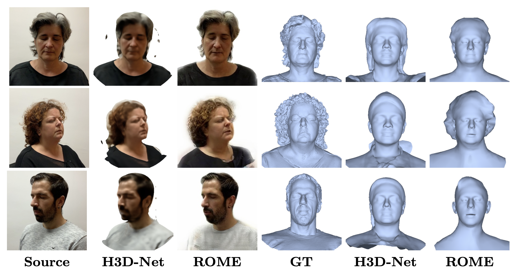 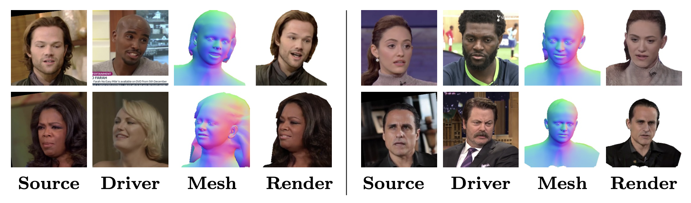GAN-based models
EG3D
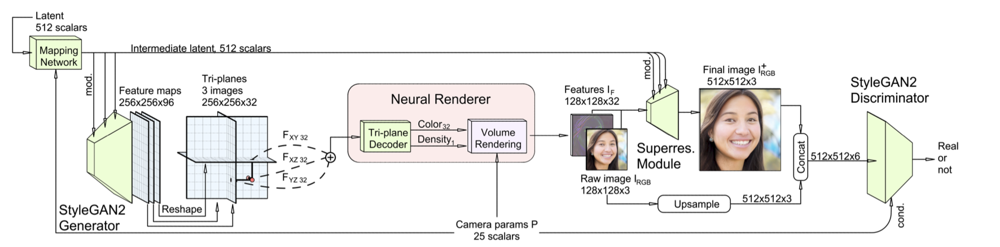 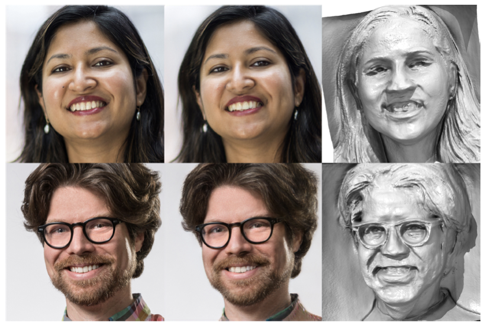3DHumanGAN: 3D-Aware Human Image Generation with 3D Pose Mapping
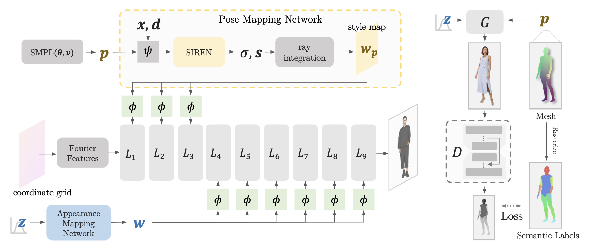